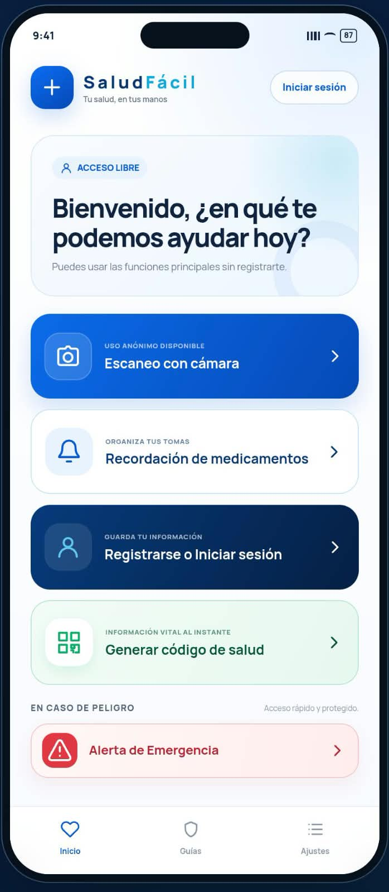
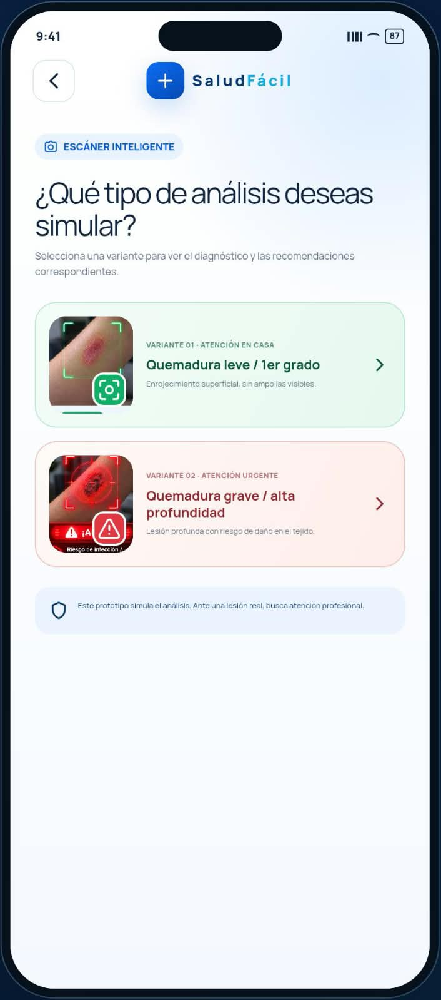
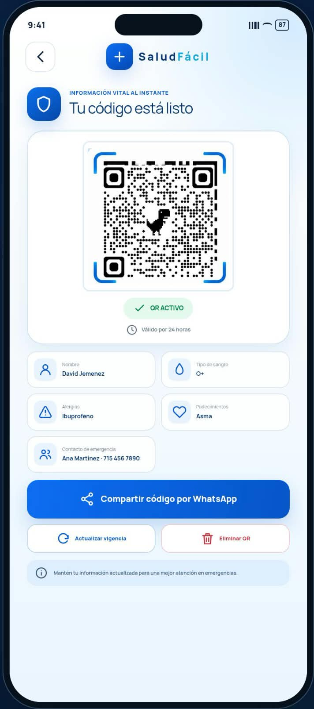

Tu salud, en tus manos. Ecosistema integral de recordatorio de medicamentos, asistencia en emergencias y código QR médico dinámico.
Probar Prototipo InteractivoEn México, miles de adultos mayores y pacientes con enfermedades crónicas (como diabetes e hipertensión) sufren complicaciones por olvidar sus dosis o no contar con su historial médico accesible durante una emergencia. SaludFácil integra prevención, monitoreo familiar y respuesta rápida en una interfaz accesible guiada por voz.
Confirma mediante la cámara que el paciente tomó su medicamento y alerta automáticamente al familiar si no se registra a tiempo.
Genera un código QR en tiempo real con alergias y padecimientos (legible incluso sin internet) y permite compartir el expediente por WhatsApp.
Orienta con instrucciones por voz paso a paso en primeros auxilios (como quemaduras) y activa alertas de emergencia con ubicación.
Botones amplios, alto contraste, acceso rápido sin registro obligatorio y lectura en voz alta pensada para adultos mayores.
Vistas principales diseñadas bajo principios de experiencia de usuario (UI/UX) centrados en la claridad y rapidez:



El prototipo funcional actual valida la arquitectura de información, generación dinámica de códigos QR y flujos de usuario. Para su despliegue en producción se proyecta: